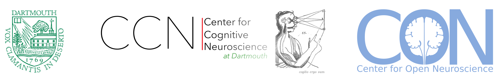
Open Neuroscience Infrastructure
for Intracranial EEG
A toolbelt, not one solution — and an invitation to help bridge academia and the clinic

Live slides/Sources: https://datasets.datalad.org/centerforopenneuroscience/talks/2026-dhmc-ieeg.html
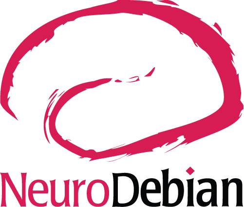
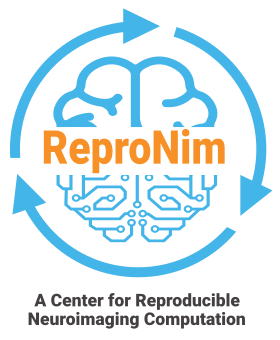
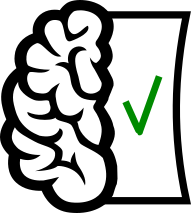
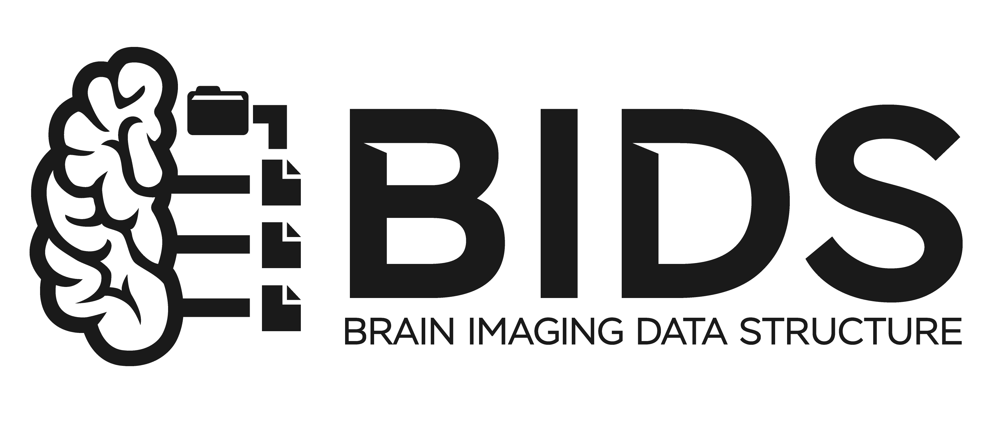
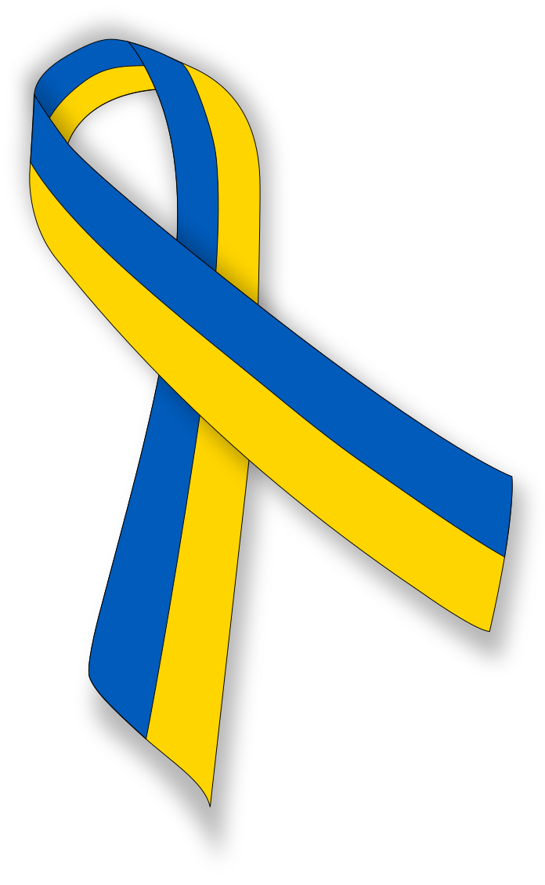
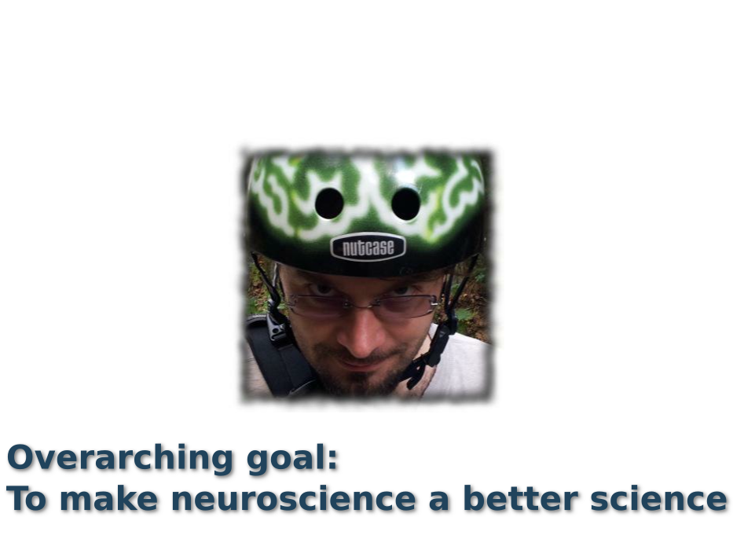
Brief Yarik's Bio
Born in Siberia (RSFSR, USSR), Grew up in Ukraine, Matured in U.S.A.
- -1994 Physics Mathematics Gymnasium #17 (Ukraine):
Regional&State Physics and Programming competitions. MS-DOS. Borland Pascal - -1999 VSTU (Ukraine):
Masters in Opto-Electronic Engineering
(@yarikoptic). State Physics and International ACM Programming competitions. Spine diagnostic apparatus. Member of "Small Academy of Science of Ukraine". SPIE. Soros Fellowship (twice). MS-DOS/Windows. Borland Pascal, Delphi, VBA - -2003 University of New Mexico:
Masters in Computer Science
B.Pearlmutter. SOBI/JADE ICA for single trial MEG. Favorite course: Data structures and algorithms. Debian GNU/Linux. C, Matlab, shell. CVS - -2009 Rutgers-Newark/NJIT:
Ph.D. in Computer Science
S.Hanson. fMRI decoding (RFE SVM). RUMBA. HPC sysadmin (cfengine, PBS). M.Hanke. Debian pkg-exppsy (for FSL and PyEPL). Official Debian developer. fMRI/EEG (TRANS)fusion. PyMVPA. C++, Python. SVN, GIT. 1 wife, 3 kids - - NOW Dartmouth College, PBS Department:
Postdoc, Scientist, Research Assistant/Associate/null Professor
J.Haxby. PyMVPA (Hyperalignment, ...), NeuroDebian, DataLad, ReproNim, DANDI, STAMPED, ... 1(+1) dog, 3 cats, Chicken Coop (12 chickens, 1 rooster), ... distribits, CON:
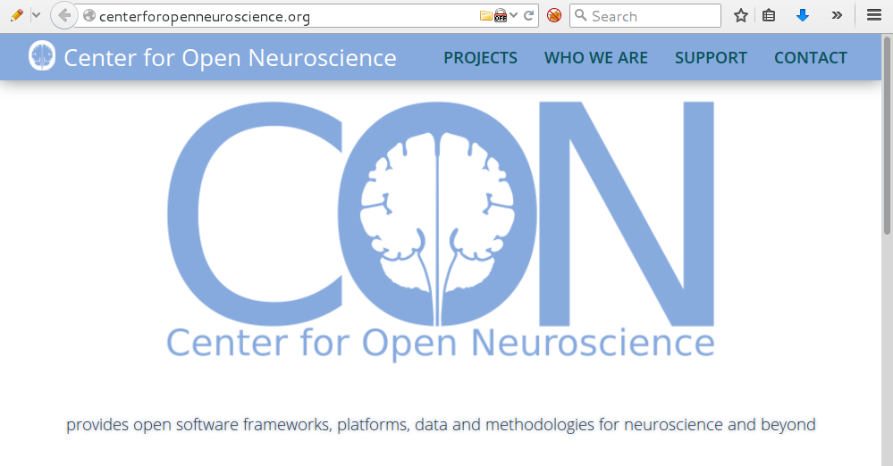
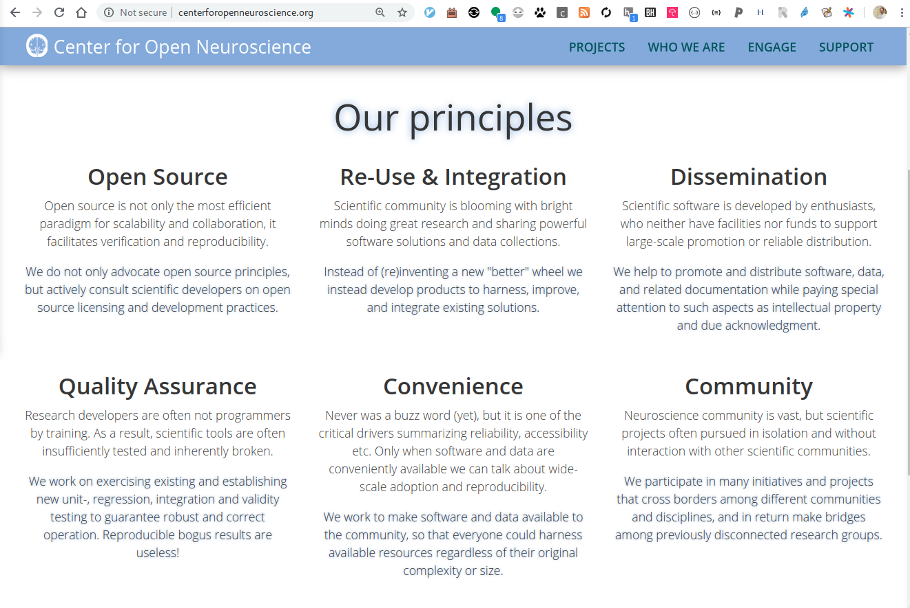
Acknowledgements


Disclaimers
One toolbelt, not one solution
- "Many sizes fit all" — no single tool or standard solves everything
- You don't have to "buy in 100%" — pieces compose, and are useful alone
- Everything today is a pointer not a deep technical tutorial
All standards are "Bad"*,
but some are used
* ref: D. Clunie (of DICOM fame), MICCAI 2017
Two widely-used standards which could cooperate more are:
BIDS (academia) and DICOM (clinic/vendors)
Same underlying problem, different communities, thin collaboration today
see 2023-bids-dicom.html (BIDS 4 DICOM talk) for the longer version of this argument Rübel, O., Baker, C. C., … Halchenko, Y. (2025).
Rübel, O., Baker, C. C., … Halchenko, Y. (2025). Let's Zoom-in on
Academic ecosystem
open-brain-consent.readthedocs.io
Born in 2014
E. Bannier, G. Barker, V. Borghesani, ..., Y. O. Halchenko, ..., H. Zhu. The Open Brain Consent: Informing research participants and obtaining consent to share brain imaging data. Human Brain Mapping, feb 2021. doi: 10.1002/hbm.25351Federally regulated but locally “managed”
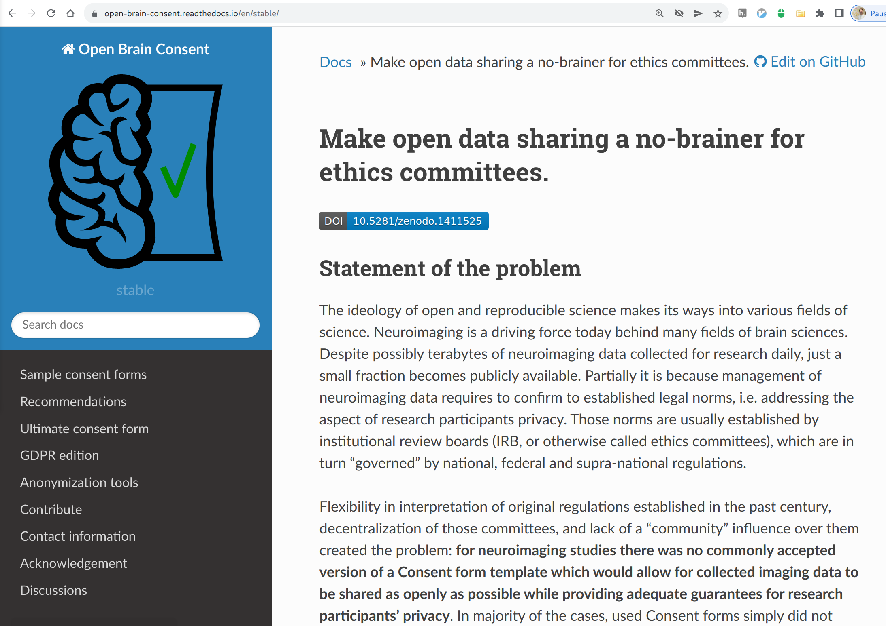
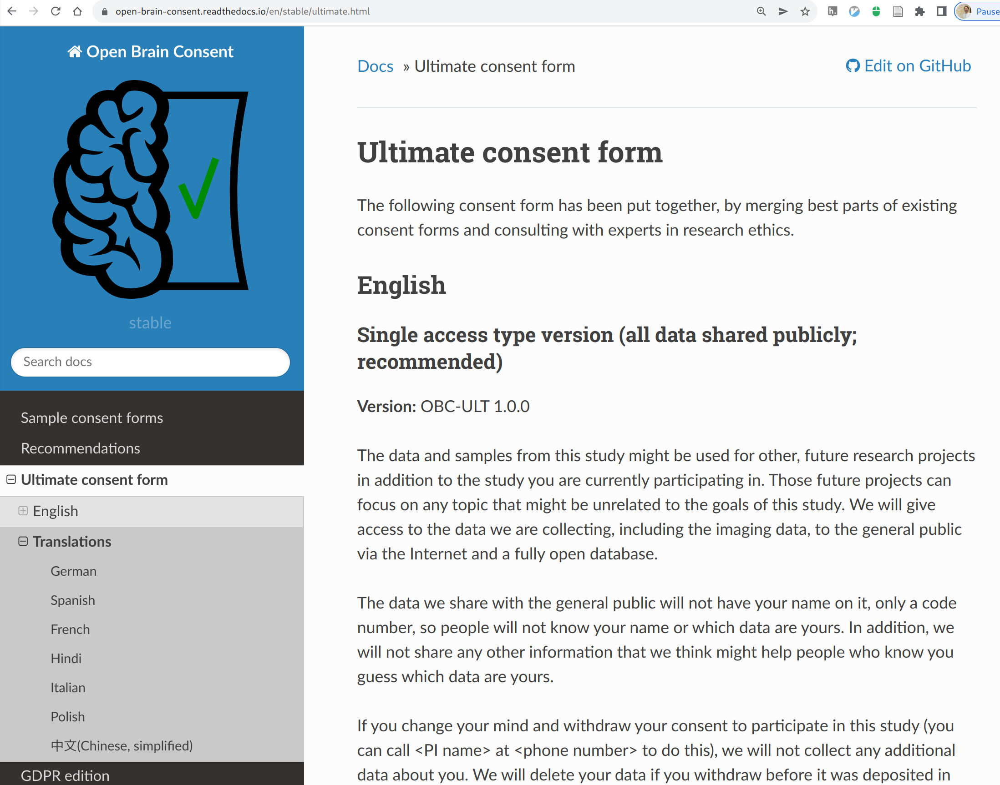
Over 20 contributors · 8 translations of the Ultimate Form · IRB committees can use OBC instead of reviewing ad-hoc wording — every archive downstream (OpenNeuro, DANDI, NEMAR, EMBER) relies on consent like this at the gate
NWB: one file format for all modalities + metadata

NWB supports a range of user experience

Life without NWB

Web streaming is on the rise
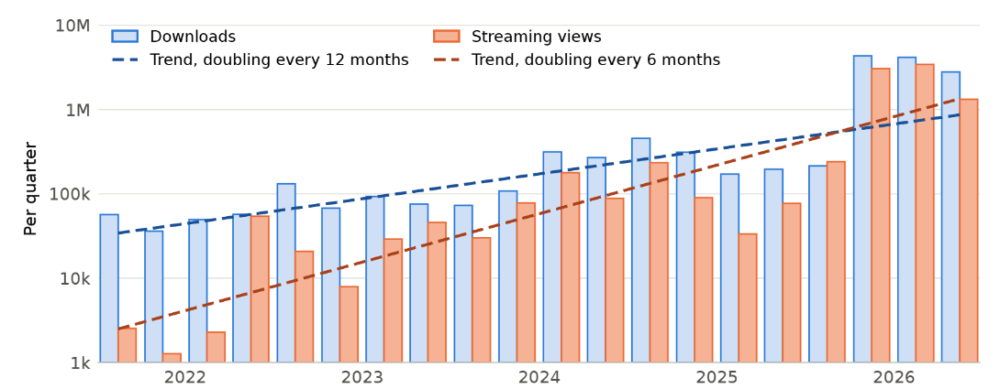
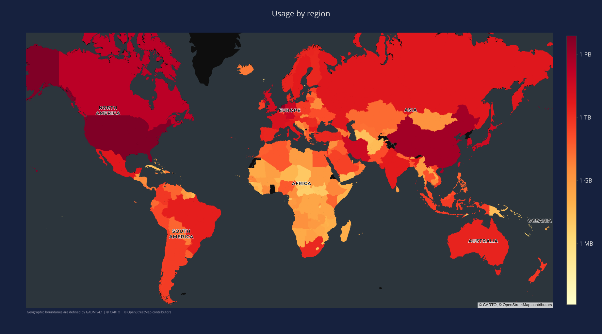
In large part thanks to apps such as Neurosift
- Browser-based NWB viewer:
- no download required
- works directly against DANDI
- works on GB-sized files "just as well"
- Free & Open-source: fix & extend at will
- New event-related signals view:
align any time series to any column of a trials/intervals table, pick channels, group trials by a condition - New spectrogram view
One known iEEG NWB example on DANDI: ds008610 (LFP only)
Example 1: behavior, grouped by condition
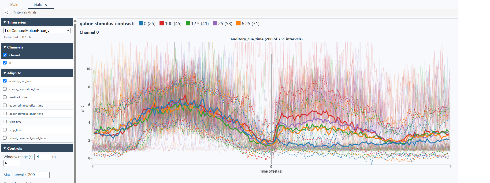
Camera motion energy, aligned to auditory_cue_time,
grouped by gabor_stimulus_contrast
— DANDI:000409
Example 2: LFP aligned to reward

LFP aligned to reward_start_time, channels 0, 2, 4
— DANDI:001539
Example 3: LFP around stimulus presentations
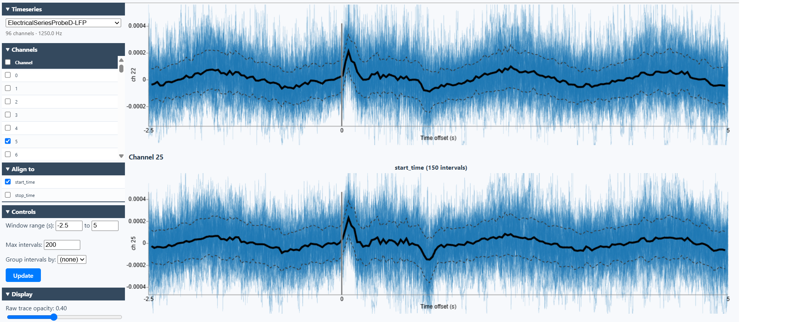
40 Hz pulse-train presentations, probe D LFP, channels 5, 22, 25, 32 — DANDI:001637
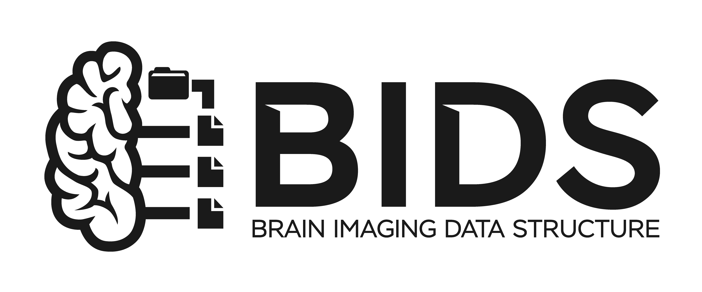
Gorgolewski, K. J., Auer, T., Calhoun, V. D., Craddock, R. C., Das, S., Duff, E. P., Flandin, G., Ghosh, S. S., Glatard, T., Halchenko, Y. O., Handwerker, D. A., Hanke, M., Keator, D., Li, X., Michael, Z., Maumet, C., Nichols, B. N., Nichols, T. E., Pellman, J., Poline, J.-B., Rokem, A., Schaefer, G., Sochat, V., Triplett, W., Turner, J. A., Varoquaux, G., and Poldrack, R. A. (2016). The brain imaging data structure, a format for organizing and describing outputs of neuroimaging experiments. Scientific Data, 3:160044
DANDI Compute
DANDI Compute: orchestration
DANDI Compute: the spike-sorting pipeline
DANDI Compute: the derivative it produces
Compute: pointers only
- ReproNim/containers — portable, versioned software environments
- mechababs + BABS — STAMPED execution of BIDS-Apps at scale, DataLad-native, per-subject isolation
- TODO: "compute on Unity" — need one line from you/Austin; nothing in our existing materials mentions this
Leftover: not yet placed
These don't map onto a specific step in either incremental diagram (academic-clinician / academic-participants) — kept here for Yarik to decide where (or whether) they belong.
How could we collaborate on metadata that matters clinically?
- Should individual labs channel requests to manufacturers one at a time, or could DICOM WG-32 help coordinate?
- Proposition: a library of concrete DICOM↔BIDS/NWB conversions, per manufacturer and modality
You're already standing in the gap
- This group runs clinical iEEG acquisition and does research analysis — both worlds, already, every day
- That makes you natural informants for
neuroconvformat support, BEP010 edge cases, and DICOM↔BIDS/NWB conversion libraries - Ask: who else should be in that room? what hardware/format gaps have you hit that we should know about?
Carrots, not (only) sticks

Figure from M. Hanke, "Carrots! Not sticks!" hedgedoc.psychoinformatics.de/p/gBE63_ytiE
What pulls people toward standards
- Carrots — the standards themselves: free tools, free archive storage, "someone else already solved this", collaborators who can actually read your data
- Sticks exist too — mostly from funders and journals: NIH Data Management & Sharing Policy, journal data-availability requirements
- Our pitch today is almost entirely carrots — the stick is already pulling on everyone; we're here to make the carrot side concrete
Acknowledgements
|
Funders

Collaborators
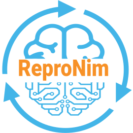 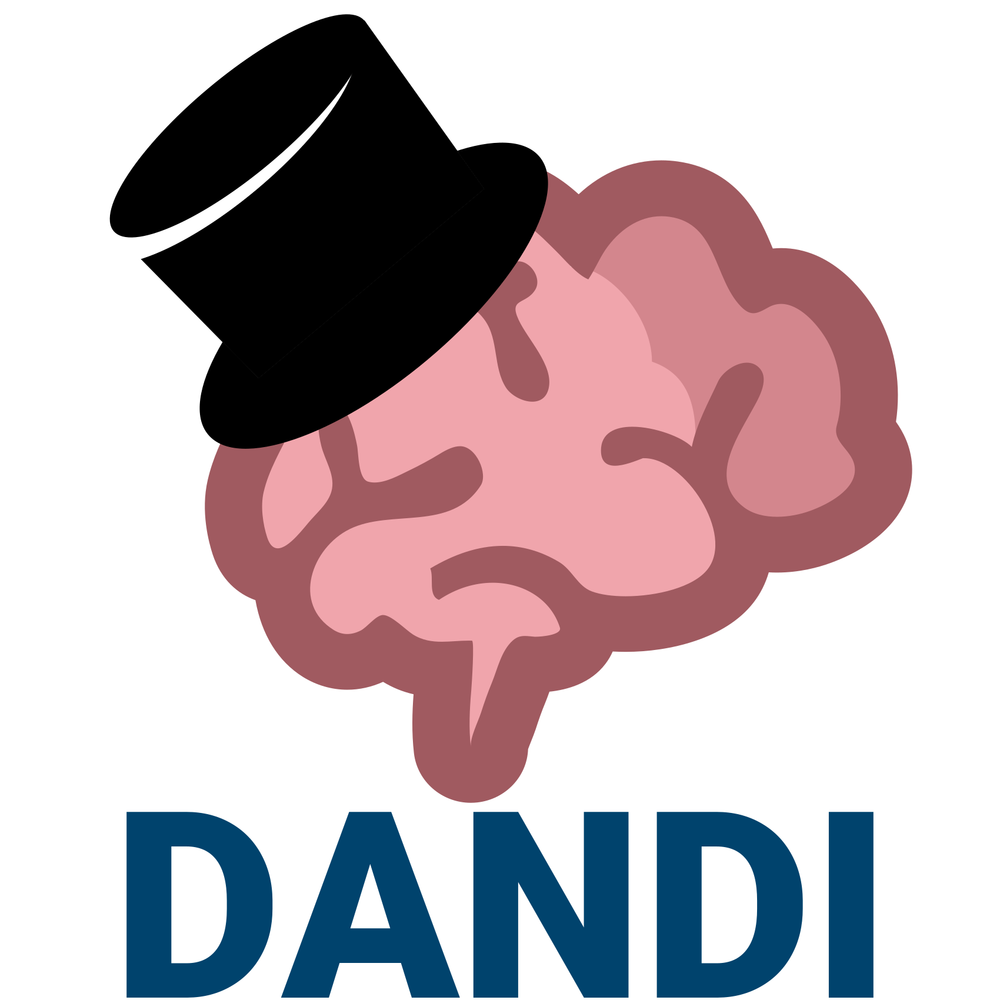 |